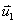
. This new vector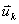
(after k iterations) contains the desired values.The function to be used for the least squares method is called R2 and is defined as follows:
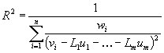
|
u1 through um |
are the desired nodal values of the target element |
|
vi |
is the input
value i (from the source mesh) |
|
L1 through Lm |
are the shape function values of the target element for
input value i |
|
wi |
is the weight factor for input value i, the volume
fraction of the source element within the target element |
The derivatives of this function to all desired values (u1 through um) are set to zero.
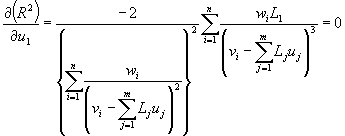
etc. until
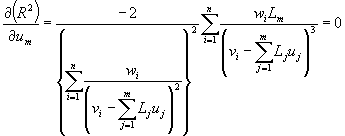
The solution to these equations have to be found numerically. We
assume we have an initial guess
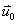
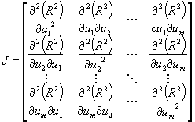
Instead of
calculating the second derivative of the function R2, the
values are estimated:
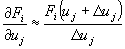
where Fi
is
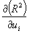
For the equations it holds that
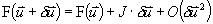
The terms of order
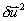 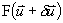
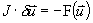
which can be solved by inverting matrix J. The
corrections
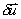
The vector
  can now be added to the initial guess
can now be added to the initial guess
 , which leads to the vector
, which leads to the vector
 can be used in the next iteration. If the items in the vector
can be used in the next iteration. If the items in the vector
 reach a prescribed limit, the iteration can be stopped, and the vector
reach a prescribed limit, the iteration can be stopped, and the vector